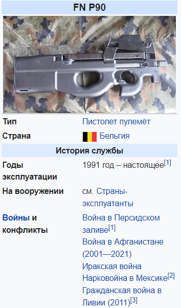

Автомат P90
FN P90 — бельгийский автомат (персональное оружие самообороны), разработанный в 1986—1987 годах фирмой FN Herstal. Был разработан, в первую очередь, для танкистов и водителей боевых автомобилей и машин. Специально для P90 был разработан патрон типа 5,7×28 мм SS190, обладающий высокой пробивной мощностью и низкой степенью рикошетирования. Пуля данного патрона развивает дульную скорость до 715 м/с и способна пробить титан/кевларовый броневой жилет, соответствующий требованиям НАТО CRISAT до 20 метров. Из-за необычного внешнего вида часто используется в фантастических фильмах и сериалах, таких как: «Доктор Кто», «Остров» и «Звёздные врата: SG-1».
Назначение симулятора
Симулятор сборки/разборки P90 и стрельбы из него предназначен для обучения пользователей навыкам работы с автоматическим оружием P90. Он предоставляет возможность пользователям изучить структуру и компоненты автомата P90, освоить технику сборки и разборки оружия, а также попрактиковаться в виртуальной стрельбе, эмулирующей реалистичные условия использования оружия. Целью установки является обучение пользователей безопасному и эффективному использованию оружия P90, повышение их навыков обращения с оружием, а также улучшение понимания работы и функциональных возможностей данного типа автоматического оружия.
История создания
Автором P90 является бельгийская компания Fabrique Nationale d'Herstal (FN Herstal). P90 был разработан в 1990 году инженером Жаном-Луи Валяном (Jean-Louis Gathoye) в рамках программы по созданию компактного автомата для вооружения экипажей боевых машин и личного оружия для экипажей танков. P90 выделяется своим уникальным дизайном и использованием новаторских технологий, таких как ударная система с полностью автоматической перезарядкой и коротким ходом ствола. Он также известен своим высоким уровнем эргономики и компактным размером, что делает его популярным среди вооруженных сил и правоохранительных органов по всему миру.
Основной материал корпуса - армированный пластик. Рукоятки встроены в корпус, очень эргономичен, его удобно держать в руках. Выброс гильз производится вниз,и по этой причине,им могут владеть как правша,так и левша.
Основные модули и принципы работы установки
Модуль симуляции P90: Включает в себя виртуальное моделирование структуры и компонентов автомата P90, а также средства визуализации, позволяющие пользователю взаимодействовать с оружием в виртуальной среде. Модуль сборки/разборки: Обеспечивает возможность пользователям учиться собирать и разбирать P90, изучая каждый компонент и его функциональное назначение. Модуль стрельбы: Предоставляет пользователю возможность виртуальной стрельбы из P90, включая симуляцию различных режимов стрельбы, прицеливания и контроля за огневыми характеристиками.
Как он устроен?
FN P90 был построен по схеме булл-пап, автоматика работает по схеме со свободным затвором. Огонь ведется с закрытого затвора. Ударно-спусковой механизм куркового типа, позволяющий вести как одиночный, так и автоматический огонь (фиксированными очередями по 3 выстрела). Магазин (конструктор — Rene Predazzer, патент США № 4 905 394 от 6 марта 1990 года) установлен поверх ствольной коробки и его ёмкость составляет 50 патронов, при этом патроны в нём расположены перпендикулярно стволу и перед подачей в патронник разворачиваются на 90 градусов. Магазин сделан из прозрачного пластика, что позволяет стрелку видеть количество патронов в нём. Наполнение магазина производится обычным образом.
Стреляные гильзы выбрасываются вниз, через полую рукоятку управления огнём. FN Р90 оборудован встроенным коллиматорным прицелом кратности 1Х с прицельной сеткой в виде буквы Т. Прицельная сетка имеет автоматически регулируемую подсветку в зависимости от наружной освещённости; также оружие оснащено лазерным целеуказателем, расположенным снизу. Кроме того, к нему прилагается глушитель, но его эксплуатация возможна лишь при использовании патронов с дозвуковой скоростью. Одной из основных задач конструкторов было максимальное снижение веса оружия и боеприпасов.
Бельгийские конструкторы пошли по пути создания малокалиберного патрона с высокой начальной скоростью пули и разработали соответствующий поставленным требованиям боеприпас, обладавший настильной траекторией полёта пули и дававший небольшую силу отдачи, что облегчало ведение огня и поражение противника для неопытных солдат со слабой огневой подготовкой (при этом необходимая останавливающая способность обеспечивается за счёт применения неустойчивого боеприпаса, кувыркающегося при попадании). Такой комплекс оружие-патрон был призван в перспективе заменить в действующих армиях стран НАТО пистолеты и пистолеты-пулемёты под традиционный патрон 9 мм Парабеллум.
Применение установки в работе
Обучение военнослужащих и сотрудников правоохранительных органов: Установка используется для обучения военнослужащих и сотрудников правоохранительных органов технике обращения с автоматом P90, включая сборку/разборку и практику стрельбы. Тренировочные сессии и симуляции: Позволяет проводить тренировочные сессии и симуляции различных сценариев с применением оружия P90, в том числе подготовку к боевым действиям, тактическую подготовку и т.д.
Получаемая в результате использования установки продукция
Повышение квалификации и навыков: Пользователи получают возможность повысить свою квалификацию и навыки обращения с оружием, включая знание структуры, сборки/разборки и стрельбы из автомата P90. Улучшение эффективности: Установка способствует улучшению эффективности обучения и тренировок в области военной и правоохранительной подготовки, что может привести к повышению профессионализма и безопасности в работе с оружием.
Достоинства
- Может приспосабливаться для стрельбы как с левого, так и с правого плеча.
- Малогабаритный, лёгкий и (несмотря на специфический дизайн) очень удобный.
- Прост в эксплуатации.
- Превосходная точность, дальность и кучность стрельбы (по сравнению с «обычными» ПП под патроны калибром 7,62...11,43 мм).
- Небольшая и хорошо контролируемая отдача оружия.
- Высокая плотность огня.
- Большая ёмкость магазина.
- Высокая пробивная и проникающая способность скоростной малокалиберной пули.
- Хорошая поражающая способность из-за высокой скорости и рысканья пули, несмотря на малый калибр, небольшой вес пули и небольшую энергию.
Недостатки
- Спорное останавливающее действие легкой малокалиберной пули.
- Очень специфическая конструкция и длина магазина по сравнению с большинством «обычных» моделей пистолетов-пулеметов, что осложняет и замедляет перезарядку, особенно в сложных условиях боя. Длинные магазины имеют низкую прочность и надёжность.
- Большая себестоимость производства: в три раза дороже современной штурмовой винтовки и в 5–7 раз дороже ПП типа «Узи».